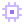

INFO

kernel
6.18.5
uptime
04:21:55
packages
1487
The panel mold — used everywhere
header
· panel_hi · uppercase title
divider
· accent→transparent
body
· panel @ 0.9
border
· 1px line_base
bevel
· 2-tone inset
corner ticks
· accent "L" ×4